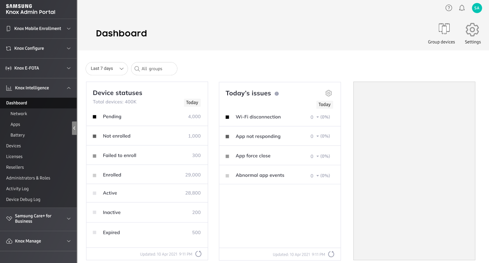
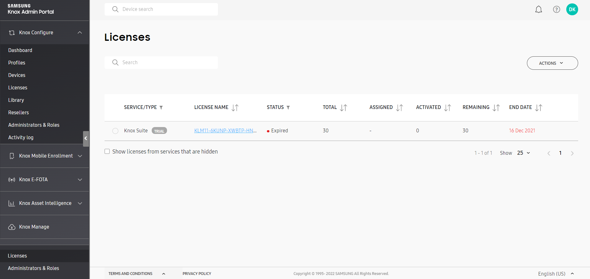
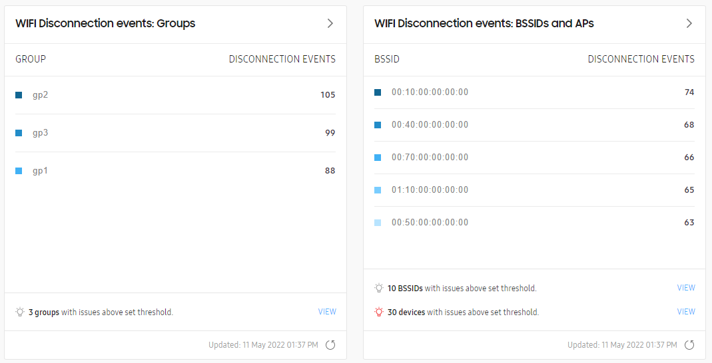
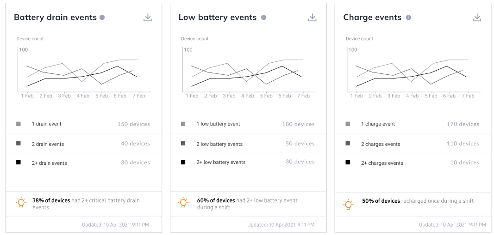
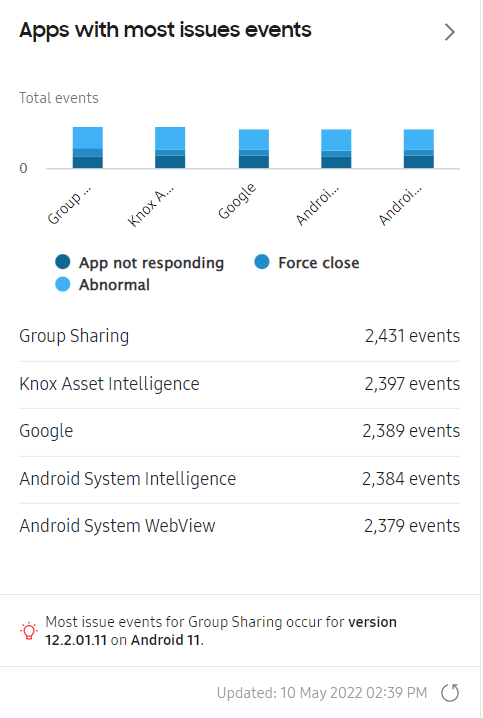

Knox Asset Intelligence 22.06 release notes
Last updated July 26th, 2023
This Knox Asset Intelligence release contains several major improvements, including a dashboard redesign, support for work shifts, additions to reported device data, and an updated enrollment process.
The described changes in this release are organized into the following categories:
UX improvements
Dashboard redesign
The Knox Asset Intelligence dashboard has been redesigned to help you access relevant device insights more quickly. Under Dashboard in the navigation pane, individual module pages now separate network, app, and battery insights to complement the main dashboard.
To support the new design, the dashboard settings now feature more granular configuration options for your dashboard. For example, you can choose to only see foreground app usage in the Application usage module instead of both foreground and background app usage. You can also select which widgets appear on the main dashboard, and drag and drop them to change their order. Information is displayed based on the device’s system time.

To learn more, refer to Configure your dashboard.
Consolidated Licenses menu
Previously, the Knox Asset Intelligence console had a dedicated License menu to manage Knox Asset Intelligence licenses.

Now, the License menus in each Knox cloud service lead to a consolidated Licenses menu on the Knox Admin Portal. While the existing functionality remains unchanged, the new menu is designed to help you easily manage licenses across multiple services.
For more info, see Manage Knox licenses in the Knox Admin Portal guide.
Event threshold additions
Previously, IT admins could only configure event thresholds for TODAY’S ISSUES, which included thresholds for the percentage of devices affected.
The event thresholds are now expanded to include Wi-Fi disconnection and battery events. You can now see Wi-Fi disconnection events by BSSIDs, groups, and devices above a certain number of events, and set the battery consumption percentage to trigger a battery drain event or low battery event once exceeded.
Event thresholds apply to the whole Knox Asset Intelligence tenant. All other users in your tenant are able to see and receive alerts for those thresholds.
See Thresholds for more details.
Support for work shift configurations
You can now set work shift policies in the dashboard settings. Work shifts can be defined by a set time range based on the device’s system time, or by detecting Wi-Fi connection events to allowlisted SSIDs.
For more details, see Work shifts.
Reported device data
Enhancements to Wi-Fi disconnection insights
With the 22.05 release, you can now see groups and BSSIDs that reported the highest number of Wi-Fi disconnection events. This change helps you more easily identify which groups are most seriously impacted by Wi-Fi disconnection events, and diagnose network issues for impacted BSSIDs.
To support this change, the dashboard widget has been redesigned, and an additional widget is now available to show disconnection events by BSSID.

For recurring disconnection events that make up more than 10% of all reported events for that time period, you can also export an event log with detailed info about each disconnection event.
See Wi-Fi connectivity for more details.
Enhancements to battery insights
In this release, new data points to check battery levels at the start and end of each work shift are included along with critical battery drain events. The percentage threshold for low battery and critical drain events can be configured in the dashboard settings.
Additionally, miniature insight charts are now available. These charts provide an at-a-glance view of various battery events, and can be added to your dashboard.

These insights are intended to help you understand whether device batteries last through a full work shift, or if the devices are due for a replacement. Click to download a CSV file with the full list of event-related data.
To learn more, refer to the following pages:
Enhancements to app insights
Similar to the battery insight modules, miniature insight charts are now available, along with new charts on Wi-Fi and mobile network usage per app. Use these charts to quickly identify and address apps that are impacting business continuity.

Click a chart to show a detailed view, which features an expanded chart and more granular info about the apps and affected devices.
Refer to the following pages for more details:
Enrollment
Improvements to enrollment experience
Previously, the Knox Asset Intelligence enrollment process varied depending on whether the agent was launched manually or automatically after installation. If the device user manually launched the agent, location permissions were required for enrollment to begin. However, an automatic launch didn’t require the same location permissions to start enrollment.
Starting with 22.05, a standardized enrollment experience is provided so that enrollment can start immediately even if location permissions aren’t granted on the device. If your EMM has an option to automatically launch apps after installation, enrollment can also be triggered this way. In the event the device doesn’t have location permissions after enrollment, a notification asks the device user to grant the proper permissions.
If the agent is launched on the device by either an EMM or device user and enrollment fails, a notification is shown. The user can tap Retry in the notification to directly attempt enrollment again.
Support for out-of-box experience
To enhance the enrollment process, out-of-box experience (OOBE) is now available to automatically deploy Knox Asset Intelligence to devices without requiring user interaction.
OOBE can only be used for reseller-uploaded devices that have been approved by the enterprise in the Knox Asset Intelligence console. Any devices uploaded in bulk through a CSV file can’t be enrolled using OOBE.
To learn more, see Enroll with OOBE.
Other
Option to hide service running notification on device
Previously, devices enrolled in Knox Asset Intelligence always displayed a running notification in the notification bar.
Now, you can hide the running notification from the device’s settings. To do so, go to Apps > Knox Asset Intelligence > Notifications > Notification Category, and turn on Foreground service channel.
On this page
Is this page helpful?